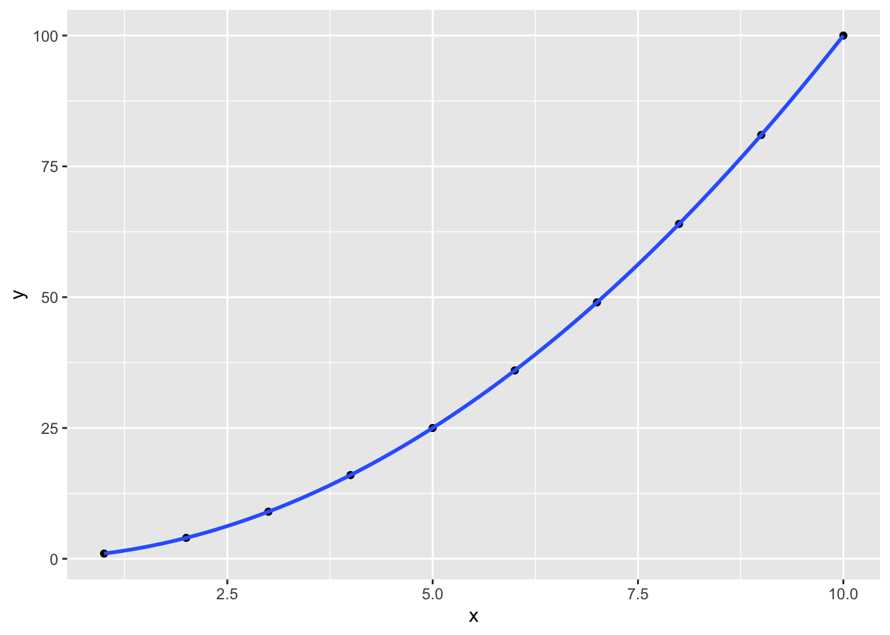
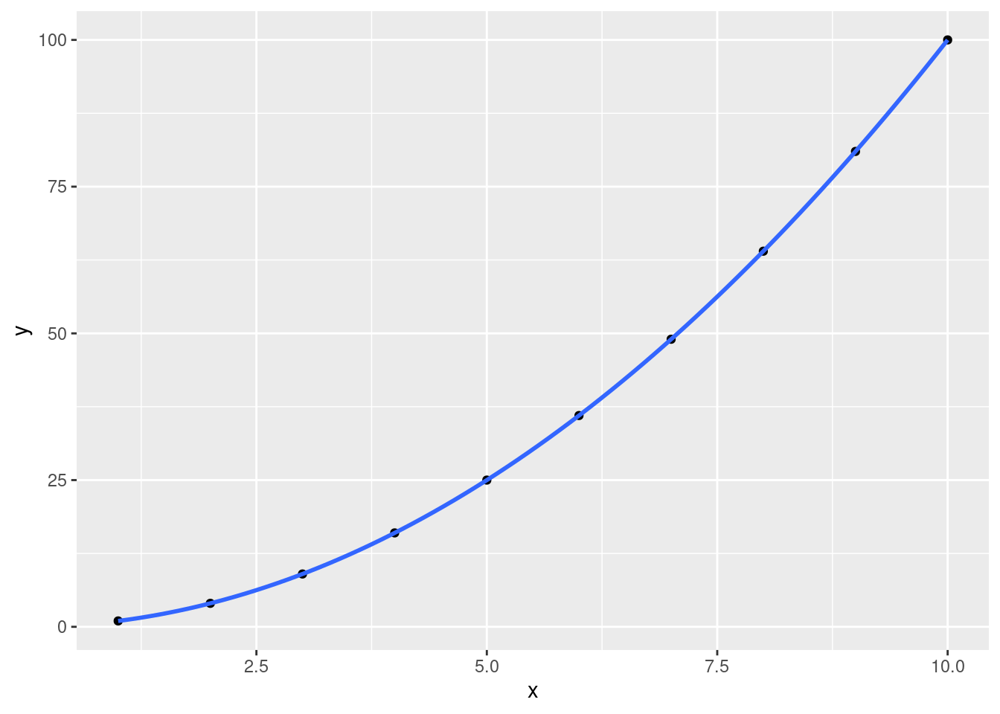

Chapter 2 Introduction
2.1 Introduction to R
- R is a open-source, freely available statistical programming language.
- R Studio is the most commonly used interface to R.
- Originally developed at Bell Labs in the 1980s as the S programming language.
- Modular, most of the functionality is in code libraries called packages..
- Literate programming and reproducible research with knitr and markdown.
2.2 The Basics
- You can think of R as a really fancy calculator, with a great way of handling data.
- The main interaction happens in the source code window (by marking code, and pressing Ctrl+R or Apple+R), and on the R console.
Addition
## [1] 3Subtraction
## [1] 1Multiplication
## [1] 6Division
## [1] 0.6666667Exponentiation
## [1] 82.3 Assignment
Values can be stored in variables, which have to be named. You might remember the concept from math; the \(x\) in \(2 = 0.5*x\) is a variable name.
Variables are created implicitly, by being assigned a value. This is done using the R assignment operator: <-.
For example, let’s assign 2 to var_name:
Now, let’s save the result of a complex expression …
… and retrieve it later …
## [1] 100… or combine with other variables
## [1] 2002.4 Evaluation
Every expression evaluates to a value.
R displays the value an expression evaluates to for almost every expression except assignment.
The result of the addition is shown:
## [1] 2- For the assignment, nothing is shown:
2.5 Operators
Variables or expressions can be compared with others. - The operator ‘==’ tests for equality:
## [1] TRUE- The operator ‘!=’ tests for inequality:
## [1] FALSE- Don’t confuse ‘==’ with ‘=’. The latter performs assignment (just like ‘<-’):
Variables or expressions can be compared with others. - What do you think ‘<’, ‘>’, ‘<=’, and ‘=>’ test for?
## [1] TRUE## [1] FALSE## [1] TRUE2.6 Using R Help
- Let’s say you forgot the difference between ‘=’, ‘==’, and ‘<-’.
2.7 Data Types
In R, variables have types:
| Data Type | Examples |
|---|---|
| Integer (Numeric): | …, -3, -2, -1, 0, +1, +2, +3, … |
| Double (Numeric): | most rational numbers; e.g., 1.0, 1.5, 20.0, pi |
| Character: | "a", "b", "word", "hello dear friend, ..." |
| Logical: | TRUE or FALSE (or: T or F ) |
| Factor: | Restricted, user-defined set of values, internally represented numerically (e.g., Gender {‘male’, ‘female’, ‘other’}) |
| Ordered factor: | Factor with an ordering (e.g., Starbucks coffee sizes {‘venti’ > ‘grande’ > ‘tall’}) |
Types matter when comparing:
## [1] FALSETypes also matter for other operations.
## Error in my_apples + my_oranges: non-numeric argument to binary operator## [1] 2.12.8 Determining Data Types
When unsure, we can ask R about the type of a variable:
## [1] "double"## [1] "character"## [1] "double"2.9 Packages
Most of R’s functionality is located in packages contributed by users. In this course, we will use the plotting functionality of ggplot2.
2.10 Plotting
…
2.11 Example: Putting it all (and some more) together
Let’s try to understand the Starbucks pricing system.
Here is how we get our data into R.
> # store size labels in a vector
> label <- c('tall', 'grande', 'venti')
> # make it an ordered vector
> label <- ordered(label, c('tall', 'grande', 'venti'))
>
> # store sizes in ounces in a vector
> size_oz <- c(12, 16, 20)
>
> # store cafe latte prices in a vector; prices probably not up to date
> price_tl <- c(8.50, 9.75, 11.00)
>
> df_starbucks_coffee <- data.frame(label, size_oz, price_tl)
> df_starbucks_coffee## label size_oz price_tl
## 1 tall 12 8.50
## 2 grande 16 9.75
## 3 venti 20 11.00> library(ggplot2)
>
> # plot cup size by size category, use a bar plot;
> ggplot(df_starbucks_coffee, aes(label, size_oz)) + geom_bar(stat = "identity")
> # plot cup size by price, use a scatterplot; draw a line through the points
> ggplot(df_starbucks_coffee, aes(price_tl, size_oz)) + geom_point() + geom_smooth(method = "lm")## `geom_smooth()` using formula 'y ~ x'
> # plot cup size by price, use a scatterplot; draw a line through the points
> ggplot(df_starbucks_coffee, aes(price_tl, size_oz)) + geom_point() + geom_smooth(method = "lm", fullrange=TRUE) + scale_x_continuous(limits = c(5, 15)) + scale_y_continuous(limits = c(0, 25))## `geom_smooth()` using formula 'y ~ x'## Warning: Removed 20 rows containing missing values (geom_smooth).
Does this plot even make sense? Why not?